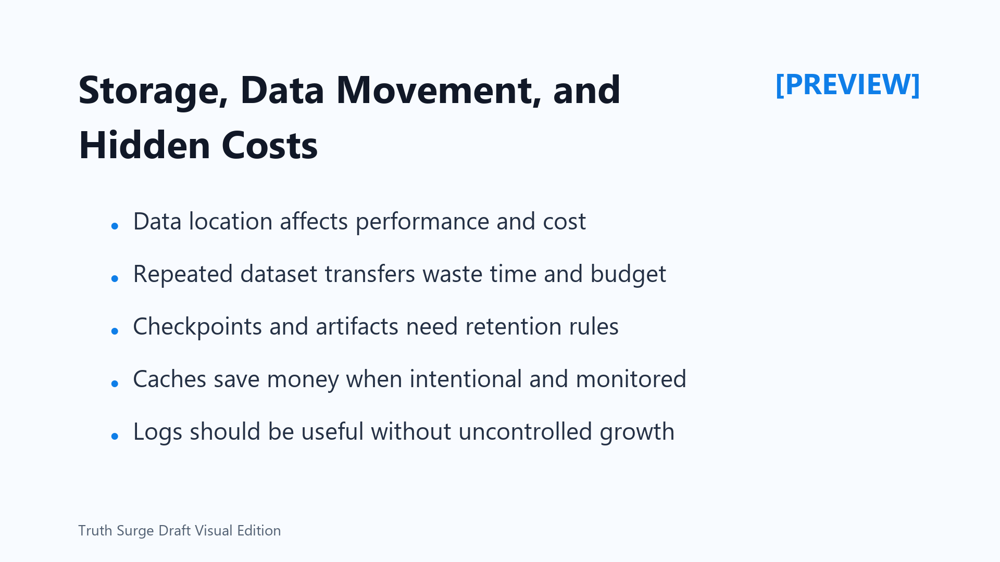

Storage, Data Movement, and Hidden Costs
Connecting to LMS... Progress: in progress

Narration
GPU spend is not only GPU time. Data location, storage type, dataset size, checkpoint strategy, logs, caches, temporary files, snapshots, and transfer patterns all affect cost. Poor data locality can make an expensive accelerator wait while data moves from somewhere else.
Repeated dataset transfers are a common hidden cost. If every run copies the same large dataset to a new location, the team may pay in both transfer cost and lost productive GPU time. Better placement, staging, or caching can help when it is designed intentionally.
Checkpoints and artifacts are valuable, but they need retention rules. During active training, checkpoints support recovery and comparison. After a decision is made, the team should know which files must be kept, which can be compacted, and which should expire. Without rules, old experiments can turn into long-term storage cost.
Caches can save money when they reduce repeated work. They can also become waste if nobody owns them or measures their value. A useful cache has a purpose, a lifetime, and monitoring that shows whether it still helps.
Logs and metrics need the same discipline. They should support troubleshooting, cost review, and operational accountability without becoming uncontrolled storage growth. Hidden costs become manageable when data movement and retention are treated as part of workload design.
A good review asks where data lives before the job starts, where outputs go after it finishes, and which files are worth keeping. Those questions often reveal avoidable transfers and stale artifacts.